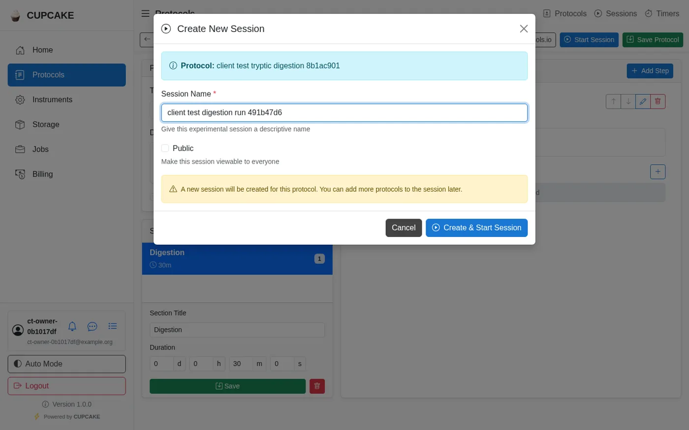
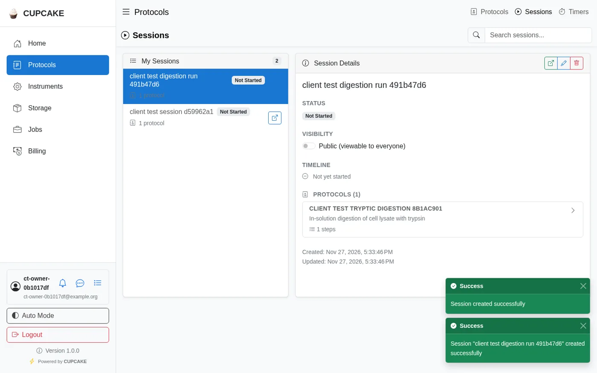
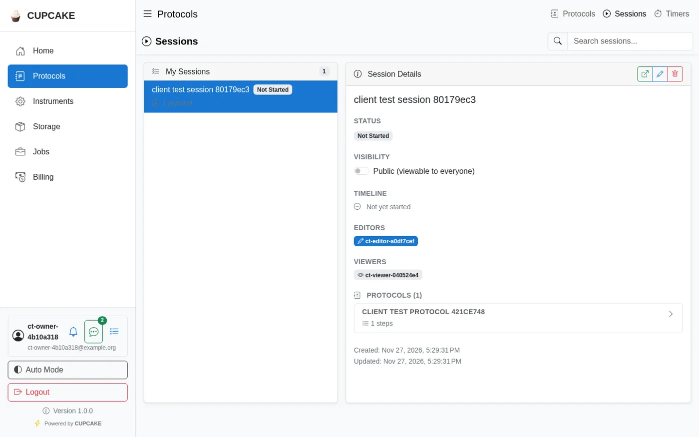
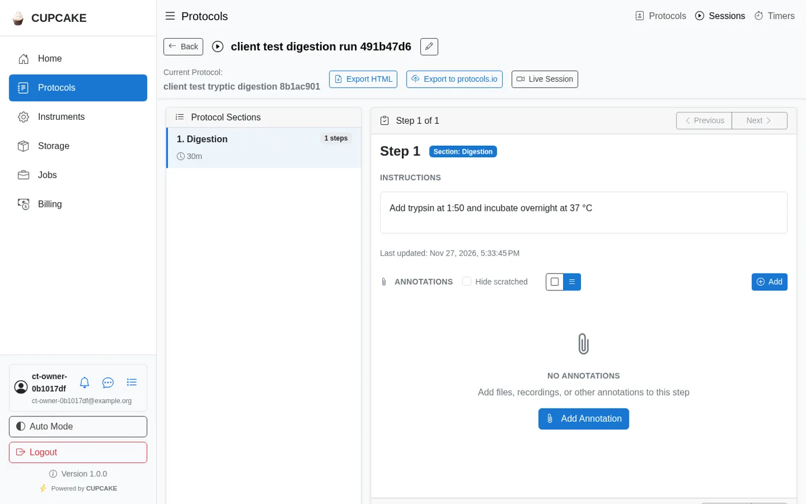
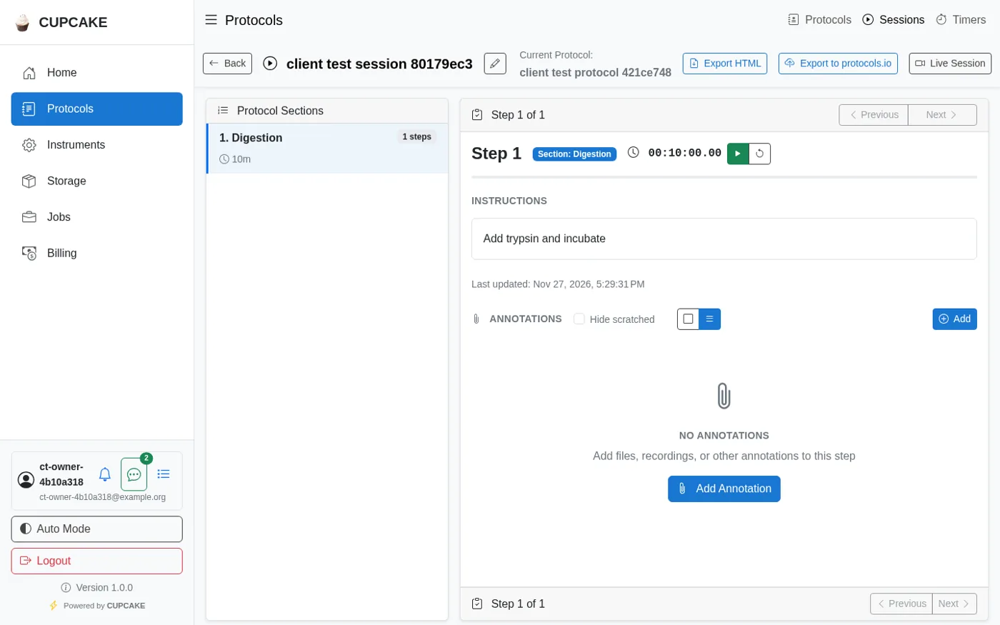
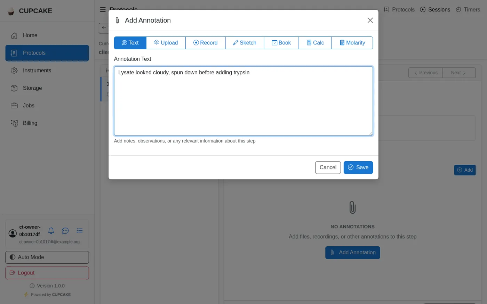
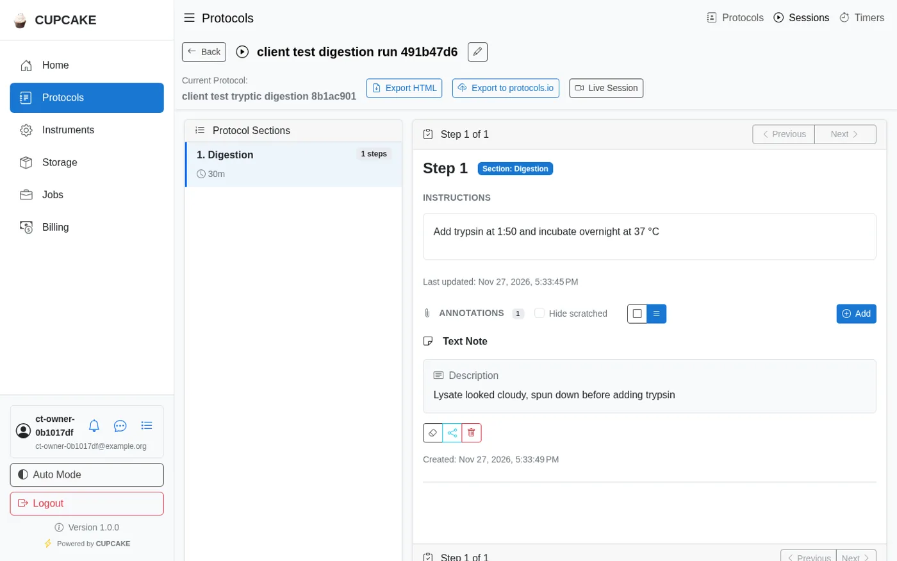
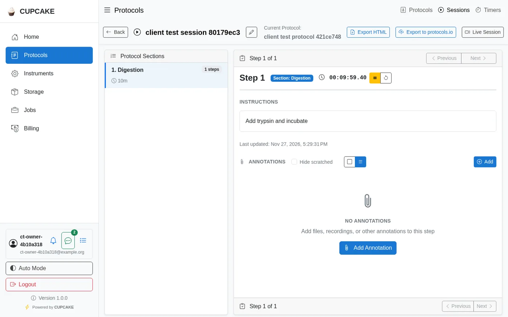

A session is one run of one or more protocols. Everyone in the session sees the same steps, notes and timers.
Starting a session
-
On a protocol, choose Start Session, name the session and choose Create & Start Session. A public session can be viewed by everyone.

-
Sessions lists your sessions; Open Session opens one.


Working through the steps
The session shows the protocol's sections and the current step, with its instructions and the reagents it needs. Previous Step and Next Step move between steps, in a single view or as a list.


Annotations
Add Annotation adds to the step:
- Text: a note.
- Upload: an image, video, audio recording or file.
- Record: an audio, video or screen recording; audio and video can be transcribed automatically.
- Sketch: a drawing.
- Book: a booking of an instrument for the step, showing the instrument's other bookings.
- Calc and Molarity: a calculator and a molarity calculator, kept with their history.


Book beside a reagent reserves a quantity of it from storage. A booking can be deleted until the site's deletion window before it starts.
Timers
A step with a duration has one timer, shared by everyone in the session: starting, pausing or resetting it does so for everyone.

Who can take part
Edit on a session sets its name, its planned dates and its editors and viewers: editors can change the session, viewers can only view it. Live Session opens a video call with the others in the session.
Exporting
Export HTML saves the session with its protocols and annotations as a web page. Export to protocols.io posts it as protocols.io runs; see protocols.io.